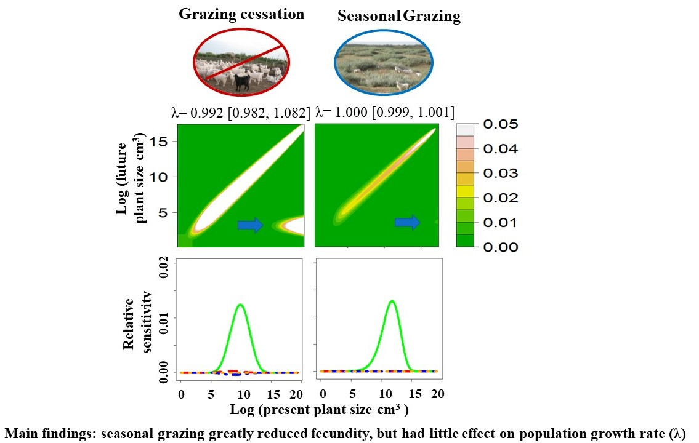
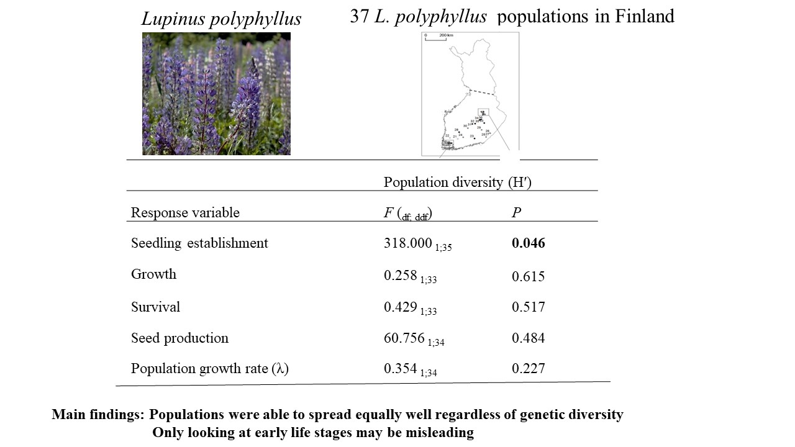

I am a quantitative ecologist. I integrate empirical data and theory with mathematical and computational models to predict the responses of plant populations to environmental changes, as well as to provide support for decision-making in ecological restoration, biodiversity conservation, invasive species management and optimal control of infectious disease.
I studied the demography of dominant shrubs in the drylands of Inner Mongolia using a combination of empirical and theoretical approaches. I investigated how woody plants manage to colonize mobile sand dunes, to maintain populations across different dune fixation stages, and to cope with grazing activities of large herbivores. It showed that the studied shrub species could adopt different life history strategies toward under different dune fixation processconditions. Populations realized rapid expansion with high recruitment and fast plant growth at the early mobile dune stage. As the dunes got became more fixed, population growth started to decline, and large plants frequently exhibited shrinkage in size but maintained , which was in a way to keep survival, a main contributor to population maintenance at later dune fixation stages. This study suggested that a slight disturbance by herbivores would help to keep the shrub populations to growgrowing, and the local management policy of completely fencing off the populations without any disturbance, which had been applied for decades in the study area, was not necessary and not recommended (Li et al. 2011, Journal of Ecology).
I also evaluated the effects of seasonal grazing on the population performance of a dominant leguminous shrub, which was a dominant species and served as the main forage in the study area in Inner Mongolia, by comparative demographic studies in seasonally grazed and ungrazed areas. It showed that the population growth was mainly maintained by high adult survival, which was hardly affected by seasonal grazing. Although seed reproduction and seedling establishment were significantly reduced by seasonal grazing, they did not affect the overall population growth, as population growth was not sensitive to changes in fecundity. Therefore, this study suggested that seasonal grazing was a sustainable grazing regime, and the complete cessation of grazing regime, which was economically undesired and had been applied to almost 20 million hectares in the study areas, was not necessary (Li et al. 2013, Journal of Applied Ecology).

To continue to explore life history strategies in temporarily varying environments and to understand what make invasive species so successful, I did a meta-analysis of demographic responses of invasive plants to temporal environmental changes. Through my study, I found that conclusions about demographic strategies were affected by the life form as it interacted with the modelling method. My findings emphasize the role of life form and methodological issues that need to be considered when exploring demographic strategies in fluctuating environments (Li et al. 2015, Population Ecology).
Furthermore, I integrated demographic modeling and genetic analysis to quantitatively evaluate the effects of genetic diversity on long-term population growth and on populations’ ability to buffer temporal environmental variations. I found that high 1 genetic diversity only facilitated early seedling recruitment, but not the fitness of later life stages, the long-term population growth rate, or the ability to adapt to environmental variations. My study therefore explained to some extent the paradox of successful invasion events with low genetic variation (Li et al. 2015, Annals of Botany).

We demonstrate an approach of using Value of Information (VoI) framework to simultaneously analyse the effects of biological and operational uncertainties on invasion control. We applied this framework to a case study: minimizing the long‐term population growth of musk thistle , * Carduus nutans *, a invasive plant native in France and invading USA, Austrailia and New Zealand, using several insects as biological control agents. We found that intervention rank is determined both by biological processes in the targeted invasive populations and by intervention effectiveness. Ignoring either biological uncertainty or operational uncertainty may result in a suboptimal recommendation. This framework presented can accommodate diverse data sources and modelling approaches, and has wide applicability to guide invasive species management and conservation efforts.
we combine population models and value of information analysis analyses to understand the uncertainties that are hindering decision decision-making in disease outbreak management and to inform public health policy. It is increasingly common that there are multiple independent models that can contribute to policy development in research fields including climate change and disease management. I developed a framework for integrating model output to identify actions that are robust to the parametric, structural, and other uncertainties reflected in an ensemble of models in disease management, using Ebola management as a case study. My study showed that the uncertainty that is of most interest epidemiologically may not be the same as the uncertainty that is most relevant for management. If the goal is to improve management outcomes, then the focus of study should be to identify and resolve those uncertainties that most hinder the choice of an optimal intervention, which has been largely ignored in previous studies (Li et al. 2017, PNAS).
Determining how best to manage an infectious disease outbreak may be hindered by both epidemiological uncertainty in disease processes and operational uncertainty about the effectiveness of candidate interventions. We simultaneously addressed both sources of uncertainty using an approach of Value of Information analysis, to elucidate which source most impedes decision-making in the case of the 2014 West African Ebola outbreak. We found the selection of optimal interventions was jointly determined by the underlying epidemiological process, the effectiveness of the interventions and the size of the budget. Under higher-budget conditions, resolution of epidemiological uncertainty is most valuable. When budgets are tight, however, operational and epidemiological uncertainty are equally important. Overall, our study demonstrates that significant reductions in caseload could result from a careful examination of both epidemiological and operational uncertainties within the same modelling structure. This approach can be applied to decision-making for the management of other diseases or biological invasion for which multiple models and multiple interventions are available (Li et al. 2021, Proc Biol Sci.).